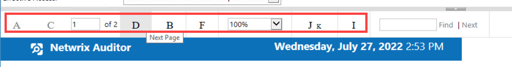

Scenario
Upon opening reports, the command buttons have been replaced by text symbols and it looks similar to this:
Solution
The issue lies with internet explorer's handling of permissions. To fix the issue you need to add the reporting server to the Trusted Sites and disable the Protected Mode for Admins on the Netwrix Server.Adding Reporting Server to the Trusted sites
to do it, follow these steps:- In Internet Explorer, click Tools, then Internet Options, in there, go to the Security tab.
- In the Select a Web content zone to specify its current security settings box, click Trusted Sites, and then click Sites.
- In the Add this Web site to the zone box, type the IP address of the Netwrix Server, and then click Add.
- Click OK two times to accept the changes and return to Internet Explorer.
Disabling Protected Mode for Admins
This operation can be done using group policies. To do so, you need to first locate the Group Policy that applies to the Admins of the Netwrix Server. To disable Protected mode, follow these steps:- Launch Group Policy Management Console and Edit a policy.
- Expand: User Configuration > Administrative Templates > Windows Components > Internet Explorer> Internet Control Panel > Security Page > Internet Zone
- Double click Turn On Protected mode
- Select ENABLED
- Select DISABLED from the PROTECTED MODE selection box.